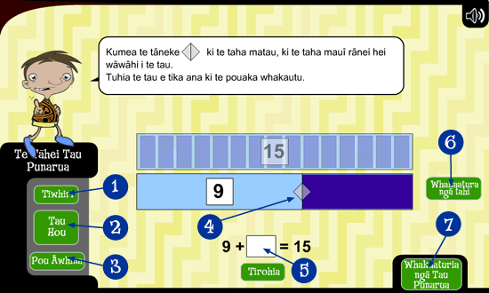

|
|
|
Ko te mahi a te tāhei tau punarua, he āwhina i a koe ki te wāwāhi tau ki ōna tau punarua. Ko ngā tau nui ake i te 10, iti iho i te 30 e taea ana te whakauru ki te tāhei tau punarua.
Kōwhiria tētahi tau, mā te tāhei tau punarua e wāwāhi kia kitea ētahi tau punarua e toru. Māu e whakaoti ngā tau punarua.

- Pāwhiria te pūtohu Tīwhiri, ka kite koe i ētahi rautaki hei āwhina i a koe ki te wāwāhi i te tau, ki te whakaoti i te tau punarua.
- Pāwhiria te pūtohu Tau hou, ka hoki koe ki te tīmatanga, ā, ka tuhi i tētahi tau hou.
- Pāwhiria te pūtohu Pou Āwhina, ka puta ngā tohutohu mō te whakamahi i te tāhei tau punarua.
- Kumea tēnei tāneke hei wāwāhi i te tau ki ētahi wāhanga e rua.
- Koinei te pouaka hei tuhi i te whakautu. Tuhia te tau hei whakaoti i te tau punarua. Kei a koe te whiriwhiri mō āhea tuhi ai i te whakautu.
- Pāwhiria te pūtohu Whakaaturia ngā tahi, kia kitea ai ngā tahi i roto i te Tāhei. Mēnā ka raru koe, tatauria ngā tahi hei whakaoti i te tau punarua.
- Pāwhiria te pūtohu Whakaaturia ngā tau punarua, kia kitea ai ngā tau punarua kua oti i a koe.
|